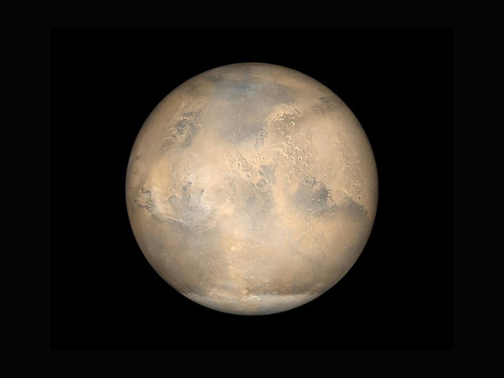
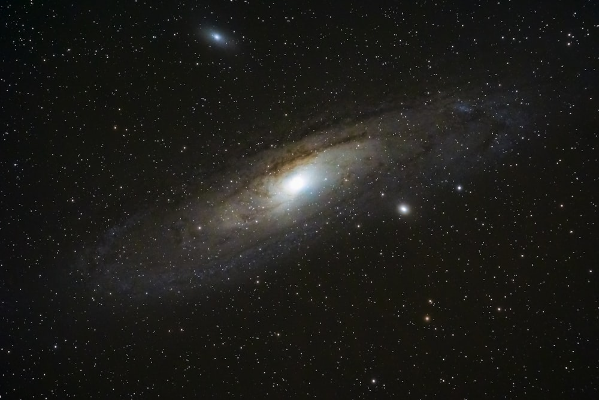
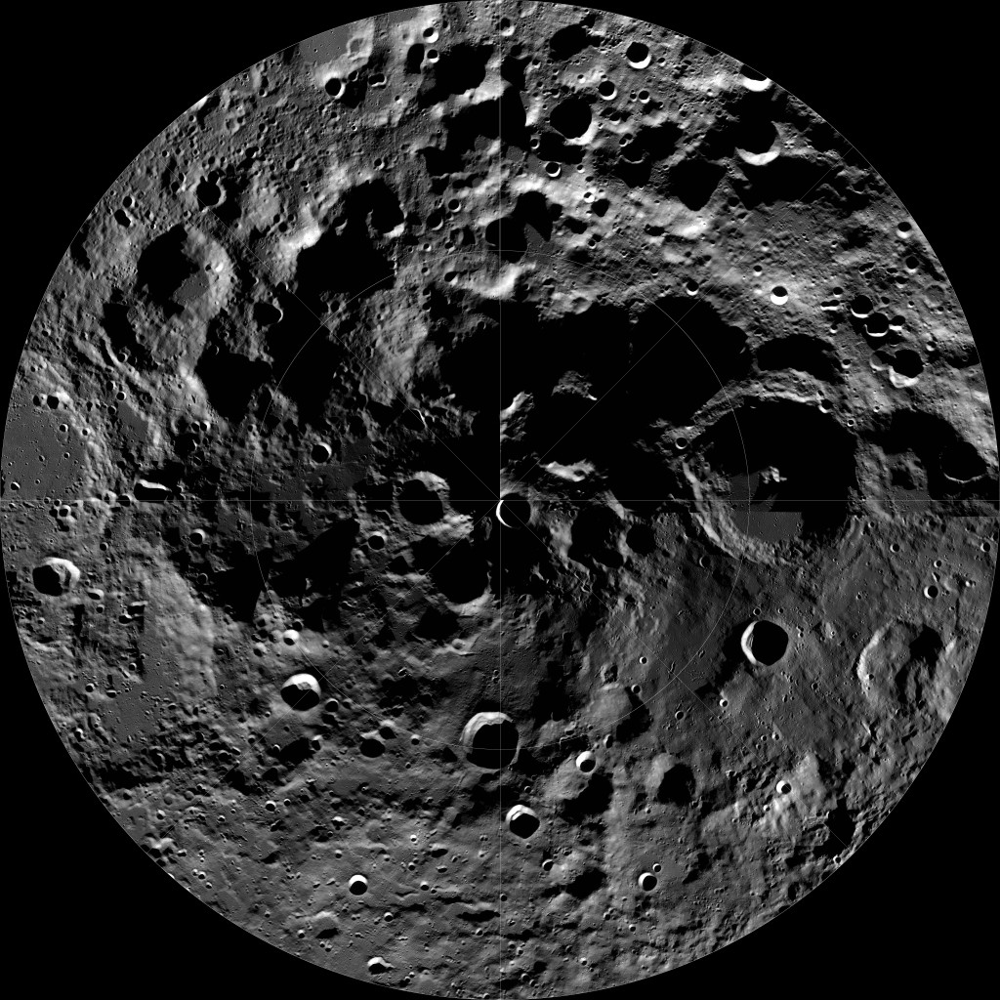

SHADOW PSR
0.25 M/PX
Shackleton Crater PSR
89.9° S, 0.0° E • LUNAR SOUTH POLE
Extreme low-light capture of the permanently shadowed floor of Shackleton crater illuminated only by secondary reflections off towering 4.2 km sunlit rims.

COLD TRAP
0.25 M/PX
Faustini Crater Rim & Floor
87.3° S, 77.0° E • CRYOGENIC ZONE
Cryogenic trap region (<35 K) sheltered from micrometeorite weathering. Ideal candidate for Artemis base camp and subsurface water-ice extraction.

VOLATILE ICE
0.25 M/PX
Shoemaker Crater Shadow Basin
88.1° S, 45.9° E • POLAR RIDGE
High-contrast orbital swath revealing deep epithermal neutron absorption. Contains dense volatile hydrogen reservoirs mixed with fine lunar regolith.

EXTREME LOW-LIGHT
0.25 M/PX
Haworth Crater Deep Shadow Wall
87.4° S, 5.1° W • ULTRA-COLD
Severe photon-starved environment with under 0.08% solar flux. Demonstrates edge-preserving Zero-DCE deep enhancement capabilities.
GROUND TRUTH
0.25 M/PX
Cabeus Crater (LCROSS Plume Site)
84.9° S, 35.5° W • WATER VERIFIED
The verified benchmark for lunar ice where NASA LCROSS excavated 155 kg of water vapor. Captured with high dynamic range by Chandrayaan-2.

🇮🇳 ISRO LANDER
0.25 M/PX
Chandrayaan-3 Lander at Shiv Shakti
69.37° S, 32.35° E • SHIV SHAKTI POINT
Official Chandrayaan-2 OHRC photograph spotting the Chandrayaan-3 Vikram lander resting on the lunar surface, showing clear lander shadow and thruster marks.

TMC-2 CAMERA
2,650 KM ALT
Mare Orientale & Apollo Basin
19.4° S, 92.8° W • LUNAR HIGHLANDS
High-contrast regional photograph taken by Chandrayaan-2 at an altitude of 2,650 km showing circular multi-ring impact mountain ridges.

POLAR MOSAIC
70°S – 90°S
Lunar South Pole Polar Composite
70.0° S TO 90.0° S • POLAR STEREO
Complete high-contrast polar stereographic cartography mosaic of the Moon's South Pole encompassing all prime exploration craters.